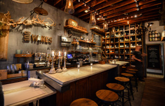
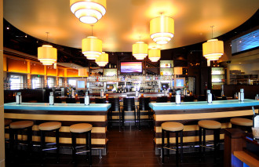
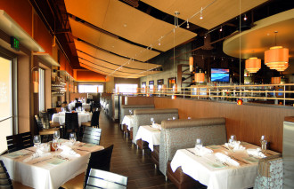
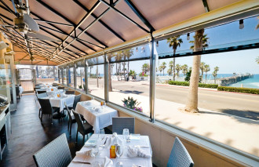
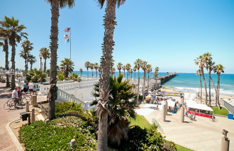

Top 5 Resturants in San Diego

100 Wine Kitchen
Located in the heart of Hillcrest, 100 Wines Kitchen offers old world charm and pays tribute to European-style social dining. The ambiance is reminiscent of an old wine bistro that might be found tucked away on the historic cobblestone alleys of Europe. 100 Wines’ menu showcases a number of shared plates, putting a current twist of Mediterranean dishes. Guests can enjoy a vast array of eclectic wines with varietals sold by the glass and by the bottle, along with a unique craft cocktail menu.

333 Pacific
Cohn Restaurant Group offers a premier upscale dining experience in North County with 333 Pacific. Located across from the Oceanside Pier, this dining destination showcases stunning views of Southern California’s shoreline. 333’s menu emphasizes California Coastal cuisine, including mouthwatering steak selections, fresh seafood dishes as well as delicious sushi offerings. Featuring over 110 vodka labels, 333’s Vodka Lounge is the perfect spot to enjoy one of the many innovative libations. Guests can also enjoy an extensive wine list of over 200 wines and a variety of local craft beers on tap.

94 Aero Squadron
It would be difficult to find another restaurant with as much warmth and charm as the 94th Aero Squadron. Located inside a replica of a World War I French farmhouse, the restaurant sits overlooking Montgomery Field Airport, and is packed full of military memorabilia, antique farm implements, and aviation relics. The interior is cozy and romantic, with huge stone fireplaces, masses of hanging green plants, dark wood paneling, beamed ceilings, and old airplane wings hanging over the dining area. There are even headphones at some of the tables for diners to listen to the FAA control tower.
On warm evenings and at lunchtime you can sit outdoors on a grassy embankment at umbrella topped tables and be surrounded by an old model airplane, an army jeep, and a duck pond.

Aqua California Bistro
Enjoy New American cuisine in this waterfront restaurant overlooking Mission Bay. Award-winning Executive Chef Hermann Schäfer brings culinary drama to his dishes, with an evolving seasonal menu. Breakfast, lunch and dinner are enjoyed indoors or on an outdoor patio. Recipient of the prestigious Wine Spectator Award, Acqua’s extensive wine list boasts more than 3,000 bottles from Old World and New World wine makers. For the beer enthusiast, guests are treated to a selection of rotating award winning craft beers. From the elegant Yellowfin Tuna Tartare, to classic comfort foods like our Kobe beef sliders, Acqua California Bistro has something that everyone can enjoy.

Analog
Located in the heart of the Gaslamp Quarter, Analog resembles an eclectic New York City lounge showcasing design elements of a wood clad 1970’s recording studio. With a creative take on gastro-pub fare, the menu showcases a combination of tasty small plates and large entrees such as the Loaded Fries and the Mahi Mahi Street Tacos. Guests can dine late-night and stick around for DJs and dancing starting after 10pm Thursday through Saturday. If you ‘re more of a morning person, don’t miss out on Analog’s Sunday Brunch and enjoy Bottomless Mimosas and food favorites such as the Churro French Toast and Bacon Cheddar Frittata. With delicious food, strong drinks and a fun nightlife scene Analog offers something for everyone.